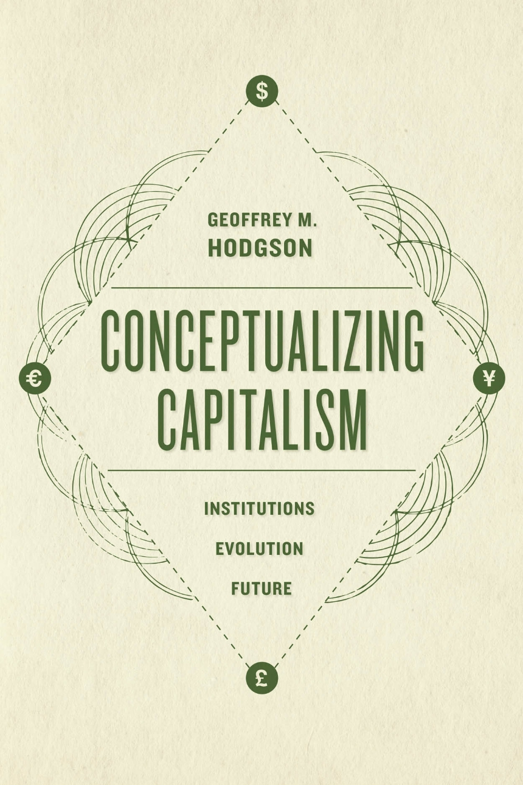
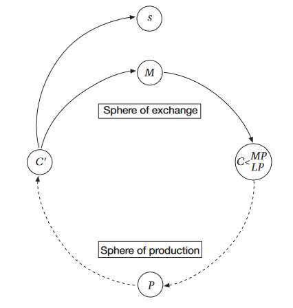
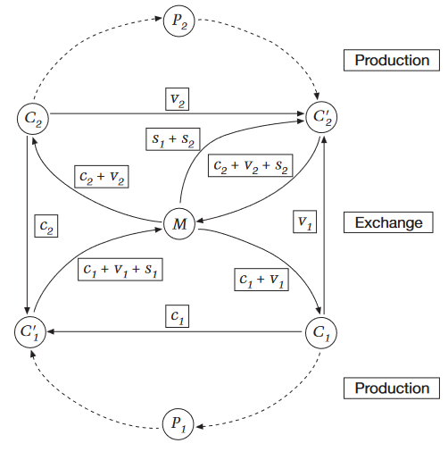
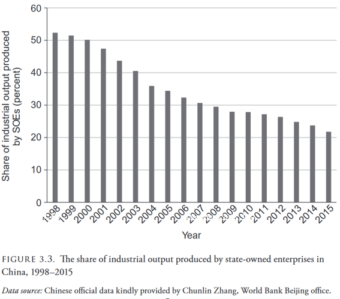
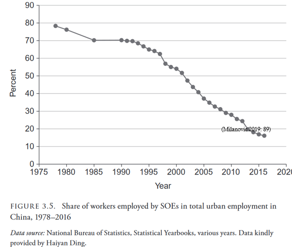
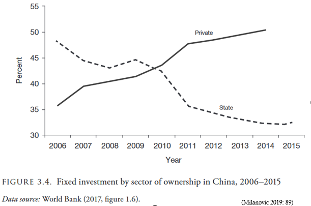

Rethinking Economics Geneva Workshops
Capitalism: Concepts and Approaches
About the Workshops
- Designed to introduce and debate/discuss some heterodox schools of thoughts/ authors in economics by exploring some topics:
- Capitalism (today and next session)
- Neoliberalism
- History of economics as a discipline
- These workshops won’t be “ex cathedra” courses, they are based on participation, discussions, etc
- So do not hesitate to interrupt, ask questions, etc…
Capitalism: Concepts & Approaches
Why do we start with capitalism ?
- It is a good way to explore different schools of thought/thinkers, since they differ a lot in how they define, conceive and analyze capitalism
Plan
- Capitalism: debated definitions
- What is capitalism for you ?
- Standard definitions of capitalism
- Conceptualizing capitalism
- Liberal vs political capitalism
- Analyzing capitalism
- Marxist approaches
- Comparative capitalism
- Régulation approach
- Post-Keynesian approaches
What is capitalism for you ? (Discussion)
- Take some time to think about what would be your definition of capitalism
- What influenced your definition of capitalism (which authors, readings etc) ?
Standard definition
“capitalism, economic system, dominant in the Western world since the breakup of feudalism, in which most means of production are privately owned and production is guided and income distributed largely through the operation of markets.” (Britannica)
2 elements: 1. means of production privately owned 2. Production and distribution through markets
Standard definitions: mainstream macroeconomics
Macroeconomics manuals usually never or rarely mention capitalism at all, but we can find an exception in Carlin and Soskice manual:
“Capitalism is an economic system in which the capital stock is privately owned and where employers hire workers to produce goods and services with the aim of making a profit.” (Carlin and Soskice 2015, p.264)
Standard definitions: mainstream macroeconomics
Followed by a definition of central planning and (of course) some normative views:
“Under central planning, production takes place in state-owned enterprises, and resources are allocated to different sectors according to the decisions of planning bureaucrats. There was no incentive for people to take the risk of introducing new products, services or methods of production since they would not reap the rewards if the venture was successful. The potential for large gains from innovation in a capitalist economy was absent in a planned economy. There was also no penalty for failure.” (Carlin and Soskice 2015, p.264)
Standard definition
What do you think about this definition ? Is anything missing ?
- According to this definition, capitalism has more or less always existed and is rooted in human nature
- Several implied assumptions about human nature:
- Driven by personal interests, profit-making
- Rationality
- Human nature is fixed
Problems with standard definitions
If we trust these definitions, capitalism has existed for thousands of years
- Some early civilizations (ancient China for instance) already had some elements of private capital and strongly developed markets, were they capitalists ?
What was new in the beginning of capitalism ? (late 18th century)
Markets, profit-seeking, private property have always more or less existed, so what made the difference ?
A new Spirit ?
For Max Weber, (modern) capitalism is different from other economic systems because of:
- The existence of a disciplined labour force, which is rationally organized and formally/legally free
- A regularized investment of capital
- The existence and diffusion of capitalism was helped by the existence of a “protestant ethic” which favored behaviors benefiting a capitalistic system
A specific way to extract surplus value ?
Marx almost never used the word capitalism per se, but words such as “capitalist mode of production” or “capitalist production”.
In marxian perspective, capitalism is a particular mode of production, defined as an economic system based on a specific way to extract surplus-value.
What makes the capitalist mode of production “capitalism” is extraction of surplus value in the form of profit, with a separation between the workers, which are (in appearance) legally and formally free, from the means of production owned by another social group.
Régulation Theory
“There are two features of capitalism, which differ markedly from other modes of production. Firstly, the domination of a market relationship— to the point where a price is even fixed for non-commodities—contrasts with other modes of the distribution of wealth. Secondly and more importantly, the social relations of production are characterized by the capital–labor conflict. The proletarians with no access to capital are forced to sell their labor-power to “Mr. Moneybags”, the capitalist. Under the veil of an apparent exchange relationship (labor for wages) labor is actually exploited by capital, in the sense that the value created by the wage earners is greater than the value of the reproduction of their labor-power” Robert Boyer, Political Economy of Capitalisms (2022), p.38
Ernest Mandel’s view
In its introduction to Marx’s capital, Mandel gives a fair overview of what capitalism is about:
“Capitalism […] is a specific relation between wage-labour and capital, a social organization in which social labour is fragmented into firms independent of each other, which take independent decisions about investment, prices and forms of financing growth, which compete with each other for shares of markets and profits […] and which therefore buy and exploit wage-labour under specific economic conditions, compulsions and constraints” (p.58)
The “M-definition”
According to Hodgson, Marx’s definition of capitalism contains the following points:
- A legal system supporting individual rights to own and exchange private property
- Widespread commodity exchange and markets
- Widespread private ownership of the means of production by firms producing goods under the motivation of profits
- Production is organized outside the home and the family
- Widespread wage labor and employment contracts

The contribution of Schumpeter
According to Hodgson, the marxist definition omits an important point stressed by Schumpeter: the crucial role of money markets, finance and money which underlie capitalism
Hodgson thus adds a 6th point:
- A developed financial system with banking institutions, the widespread use of credit with property as collateral, and the selling of debt (Hodgson 2015, p.256)
More important than a set of characteristics
capital as value in motion


Milanovic’s definition (2019)
“System where most production is carried out with privately owned means of production of production, capital hires legally free labor, and coordination is decentralized. […] Most investment decisions are made by private companies or individual entrepreneurs” (p.15)
3 Criteria, which have the advantage of being measurable (1) Most production carried privately; (2) capital hires legally free labor; (3) investment decisions are in majority decentralized and carried by entrepreneurs
Example: is China capitalist ?



From capitalism to capitalisms: concluding activity
As a concluding activity, I propose that we read an interesting passage from Milanovic’s Capitalism, Alone (2019)
Read pages 91-98 (Key features of political capitalism). Download the text here for the french version
If you are fast, you can also have a look at the parts on liberal meritocratic capitalism
What are the differences between political capitalism and the definition of capitalism we have seen ?
What are the key features of political capitalism ?
What do you think about this dual typology of capitalism (liberal meritocratic vs political capitalism) ?
Political capitalism
- Domination of a bureaucracy
- Absence of binding rule of law
- Autonomy of the state
Contradiction of political capitalism:
Feedback
Planning

Capitalism: concepts & approaches Part 2: analyzing capitalism
- Marxist approach
- Régulation approach
- Comparative capitalism